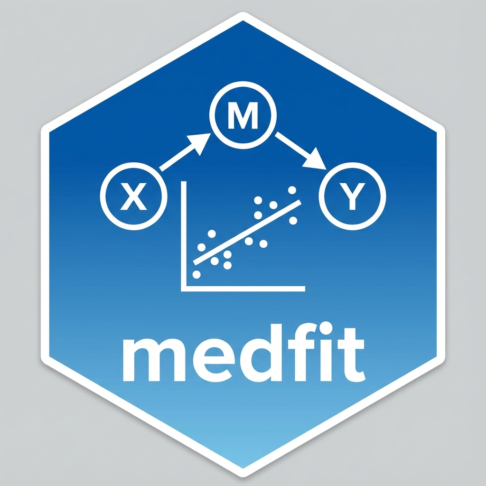

Authors and Citation
Authors
-
 Davood Tofighi. Author, maintainer, copyright holder.
Davood Tofighi. Author, maintainer, copyright holder.
Citation
Source: inst/CITATION
Tofighi D (2026). medfit: Infrastructure for Mediation Model Fitting and Extraction. R package version 0.15.0, https://data-wise.github.io/medfit/.
@Manual{,
title = {{medfit}: Infrastructure for Mediation Model Fitting and Extraction},
author = {Davood Tofighi},
year = {2026},
note = {R package version 0.15.0},
url = {https://data-wise.github.io/medfit/},
}
MacKinnon D, Lockwood C, Williams J (2004). “Confidence Limits for the Indirect Effect: Distribution of the Product and Resampling Methods.” Multivariate Behavioral Research, 39(1), 99–128. doi:10.1207/s15327906mbr3901_4.
@Article{,
title = {Confidence Limits for the Indirect Effect: Distribution of the Product and Resampling Methods},
author = {David P. MacKinnon and Chondra M. Lockwood and Jason Williams},
journal = {Multivariate Behavioral Research},
year = {2004},
volume = {39},
number = {1},
pages = {99--128},
doi = {10.1207/s15327906mbr3901_4},
}
Preacher K, Hayes A (2008). “Asymptotic and resampling strategies for assessing and comparing indirect effects in multiple mediator models.” Behavior Research Methods, 40(3), 879–891. doi:10.3758/brm.40.3.879.
@Article{,
title = {Asymptotic and resampling strategies for assessing and comparing indirect effects in multiple mediator models},
author = {Kristopher J. Preacher and Andrew F. Hayes},
journal = {Behavior Research Methods},
year = {2008},
volume = {40},
number = {3},
pages = {879--891},
doi = {10.3758/brm.40.3.879},
}
Tofighi D, MacKinnon D (2011). “RMediation: An R package for mediation analysis confidence intervals.” Behavior Research Methods, 43(3), 692–700. doi:10.3758/s13428-011-0076-x.
@Article{,
title = {{RMediation}: An {R} package for mediation analysis confidence intervals},
author = {Davood Tofighi and David P. MacKinnon},
journal = {Behavior Research Methods},
year = {2011},
volume = {43},
number = {3},
pages = {692--700},
doi = {10.3758/s13428-011-0076-x},
}
VanderWeele T (2014). “A Unification of Mediation and Interaction: A Four-Way Decomposition.” Epidemiology, 25(5), 749–761. doi:10.1097/EDE.0000000000000121.
@Article{,
title = {A Unification of Mediation and Interaction: A Four-Way Decomposition},
author = {Tyler J. VanderWeele},
journal = {Epidemiology},
year = {2014},
volume = {25},
number = {5},
pages = {749--761},
doi = {10.1097/EDE.0000000000000121},
}